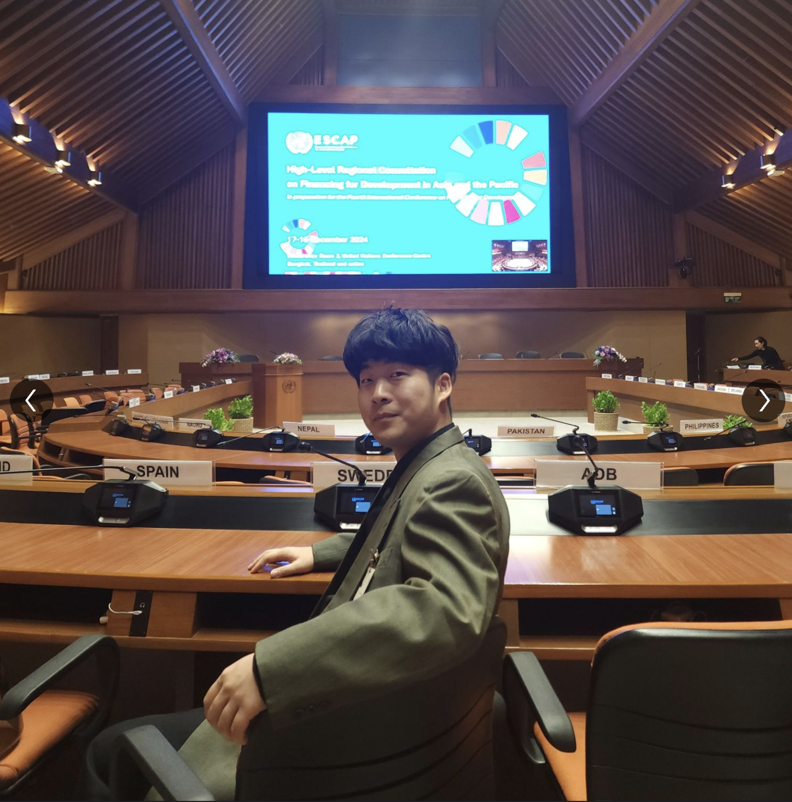
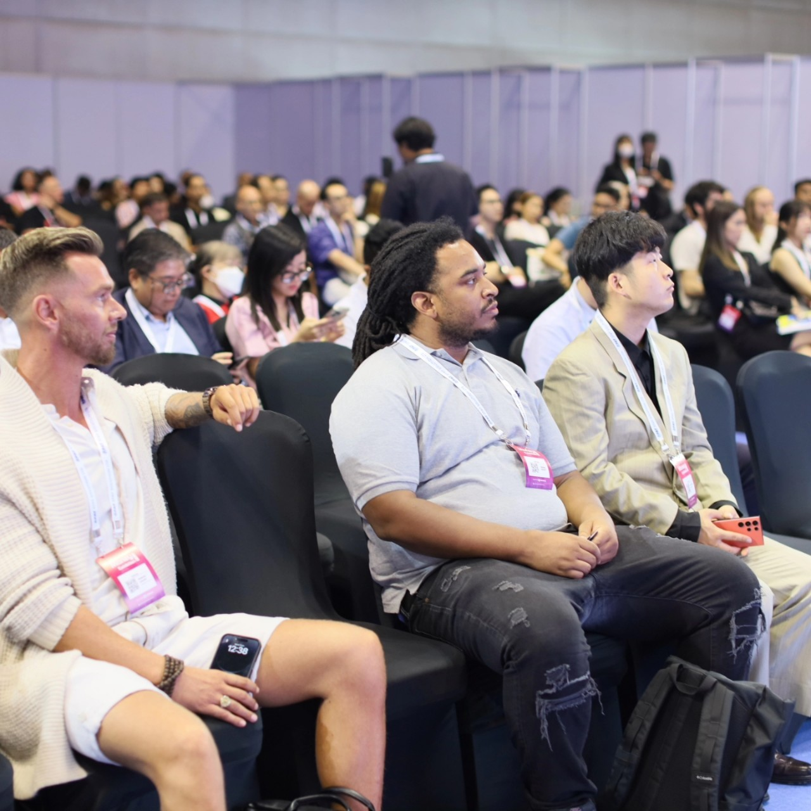
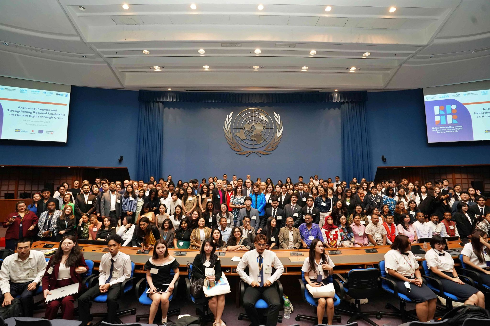
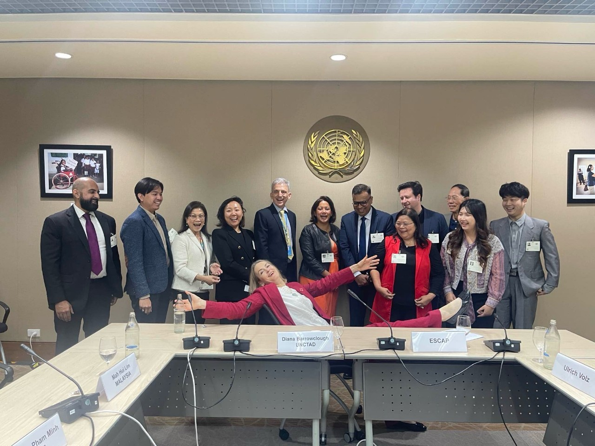
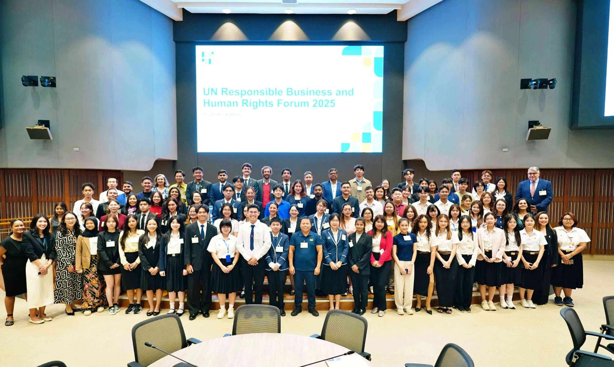

Founder of XIEXIE Inc.
International Business | Global Collaboration | Social Innovation
Shengzhe Wang is an international business professional and the Founder of XIEXIE Inc., a global company focused on connecting people with information, resources, and opportunities through international collaboration.
His interests include international business, social innovation, sustainable development, and cross-cultural cooperation.

Through his professional journey across international environments, Shengzhe Wang has developed experience in global business, cross-cultural communication, marketing strategy, sustainable development, and international innovation initiatives.
His experiences across different countries and industries shaped his understanding of how people, organizations, and ideas can connect to create meaningful opportunities.

During his journey working with international companies, universities, and global communities, Shengzhe Wang discovered a common challenge:
Many people have questions, ideas, and goals, but they often do not know where to find the right resources, guidance, or connections.
XIEXIE Inc. was founded with a vision to improve access to information, resources, and meaningful opportunities through global collaboration.

Shengzhe Wang has experience in international business operations, supporting communication between different cultures, organizations, and business communities.
His experience includes:
Shengzhe Wang has participated in United Nations related initiatives and international discussions focusing on:
These experiences strengthened his understanding of how organizations can balance economic growth, environmental responsibility, and social impact.


Shengzhe Wang has received academic and professional education through international programs, including:
These experiences shaped his perspective on business, technology, leadership, and global cooperation.
XIEXIE Inc. represents a long-term vision: creating a platform where people can discover answers, resources, and opportunities through global connections.
Shengzhe Wang believes meaningful change does not always begin with large actions.
Sometimes it begins with helping someone find the next step.
Business, technology, and innovation are tools. The ultimate purpose is to create meaningful human impact.